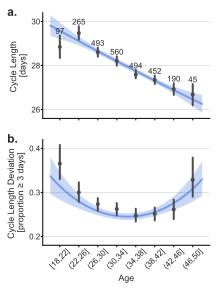
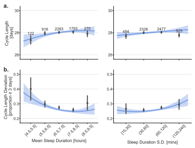
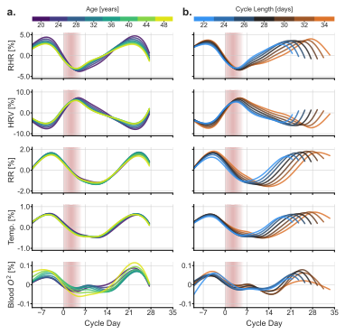
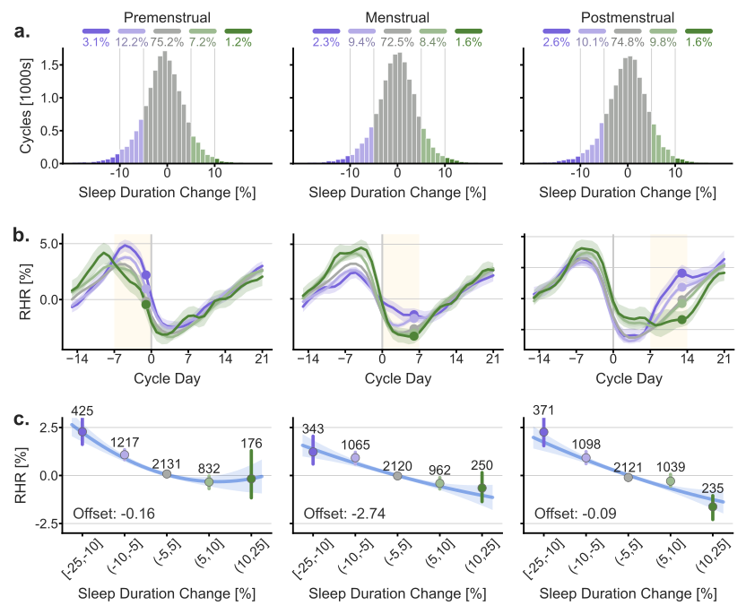

The menstrual cycle through the lens of a wearable device: insights into physiology, sleep, and cycle variability
Abstract
Women on average have 450 menstrual cycles in a lifetime, but we lack a characterization of physiological biometrics across the cycle and lifespan. We analyzed 1.2 million days of data from 2,596 women who logged 42,759 menstrual cycles and wore a device that collected sleep and biometric data including resting heart rate (RHR), heart rate variability, respiratory rate, skin temperature, and blood oxygen saturation level. We generated novel quantifications of daily biometrics across ages and cycle lengths, finding that cycle length is strongly associated with how much cardiorespiratory metrics vary across the cycle. We observed greater cycle variability for participants who slept 6 versus 8 hours. A within-participant natural experiment showed that decreased sleep resulted in biometric changes regardless of cycle phase (e.g., RHR increased 1.2% with a 10% decrease in weekly sleep duration). These results lay a foundation to better understand and optimize female health and performance.
Figures
Our results highlighting the interactions of cycle length, age, sleep, and biometrics.
Figure 1. Menstrual cycle length and cycle length deviation vary with age
Cycle length shortens with age, while cycle-to-cycle variability is highest in the youngest and oldest participants.
Figure 2. Population-level relationships between sleep duration and cycle length

Participants who slept less, or whose sleep varied more night to night, tended to have more variable cycle lengths.
Figure 3. Biometrics as a function of age and cycle length

Daily biometric patterns across the cycle are shaped more by cycle length than by age: longer cycles show larger swings in heart rate, HRV, respiratory rate, and skin temperature.
Figure 4. Changes in sleep duration relate to changes in resting heart rate consistently across the menstrual cycle

When the same person sleeps less than usual, their resting heart rate goes up by a similar amount whether they're in the menstrual, premenstrual, or postmenstrual week.
Presentation at the Female Athlete Research Meeting
Stanford University, November 2025
Acknowledgments
We thank Bill von Hippel and Finn Fielding for sharing their expertise and scientific insight to support this work. We also thank all the participants who shared data for this study. This study was funded by the Wu Tsai Human Performance Alliance at Stanford University and the Joe and Clara Tsai Foundation. The funder played no role in study design, data collection, analysis and interpretation of data, or the writing of this manuscript.
BibTeX
@article{GonzalezODay2026MenstrualCycleBiometrics,
title={The menstrual cycle through the lens of a wearable device: insights into physiology, sleep, and cycle variability},
author={Gonzalez, Alexander and O'Day, Johanna J. and Johnson, Sarah C. and Kim, Jeongeun and Jasinski, Summer R. and Holmes, Kristen E. and Delp, Scott L. and Hicks, Jennifer L.},
journal={npj Digital Medicine},
volume={9},
number={2799},
year={2026},
doi={10.1038/s41746-026-02799-9},
url={https://www.nature.com/articles/s41746-026-02799-9}
}